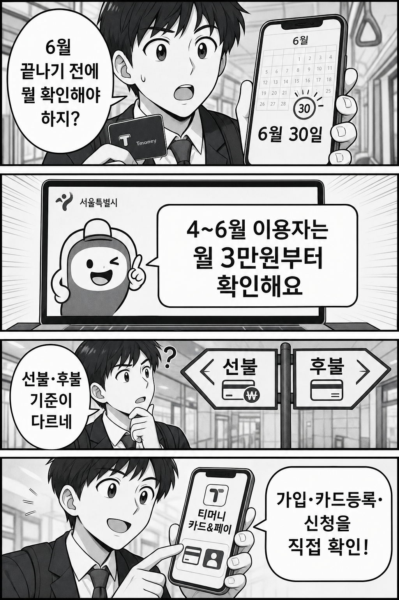

결론부터 말하면, 기후동행카드 4~6월 페이백은 “내가 썼다”만으로 끝나지 않습니다. 월 3만원, 최대 9만원을 확인하려면 서울시 공식 안내와 티머니 카드&페이에서 본인 카드의 가입·등록·신청 상태를 같이 봐야 합니다.
특히 6월 말 충전·이용을 앞둔 사람은 선불/후불 기준, 단기권, 환불, 후불 한도 미달 같은 제외 조건을 먼저 확인해야 합니다. 이 글은 신청을 대행하지 않고, 공식 확인 순서만 짧게 정리합니다.

핵심은 사용 여부보다 가입·카드등록·신청 상태를 직접 확인하는 것입니다.
5초 체크: 먼저 볼 세 가지
- 기간: 서울시 공식 안내는 2026년 4~6월 이용분을 페이백 대상으로 설명합니다.
- 금액: 월 3만원, 3개월 최대 9만원까지 안내됩니다. 실제 지급 여부는 신청 상태와 제외 조건을 따라갑니다.
- 신청: 티머니 카드&페이 가입, 카드등록, 신청 여부를 본인이 직접 확인해야 합니다.
6월 30일 충전이면 무조건 되나요?
공식 FAQ는 6월 30일 충전처럼 헷갈리는 사례도 따로 안내합니다. 다만 여기서 중요한 것은 날짜 하나만 보는 것이 아닙니다. 선불형인지 후불형인지, 30일권인지, 환불 이력이 있는지, 후불 이용금액 기준을 충족했는지처럼 카드 상태가 함께 붙습니다.
그래서 “6월 30일”만 기억하면 오히려 위험합니다. 내 카드가 어떤 유형인지 먼저 보고, 서울시 FAQ와 티머니 신청 화면에서 대상 여부를 다시 맞춰봐야 합니다.
놓치기 쉬운 제외·주의 조건
- 가입/등록 누락: 티머니 카드&페이 가입이나 카드등록이 빠져 있으면 신청 단계에서 막힐 수 있습니다.
- 단기권: 페이백 대상과 다른 권종은 제외될 수 있으니 공식 안내의 권종 기준을 확인해야 합니다.
- 환불 이력: 이용 중 환불이 있었거나 유효기간 조건이 맞지 않으면 대상 판단이 달라질 수 있습니다.
- 후불 카드: 후불형은 이용금액·한도 관련 기준이 따로 안내되므로 선불형과 같은 방식으로 보면 안 됩니다.
독자가 바로 할 순서
- 서울시 공식 페이백 안내에서 대상 기간과 금액을 확인합니다.
- 서울시 FAQ에서 내 카드 유형과 예외 조건을 확인합니다.
- 티머니 카드&페이에서 가입, 카드등록, 신청 상태를 본인이 직접 확인합니다.
- 로그인·계좌·개인정보 입력은 공식 앱/웹에서만 진행하고, 블로그나 댓글 대행 안내는 이용하지 않습니다.
정리하면, 이 페이백은 “썼으니 알아서 들어오겠지”가 아니라 공식 조건과 신청 상태를 맞춰보는 이벤트에 가깝습니다. 6월 말 전후라면 지금 한 번 확인해 두는 편이 안전합니다.
공식 확인 링크